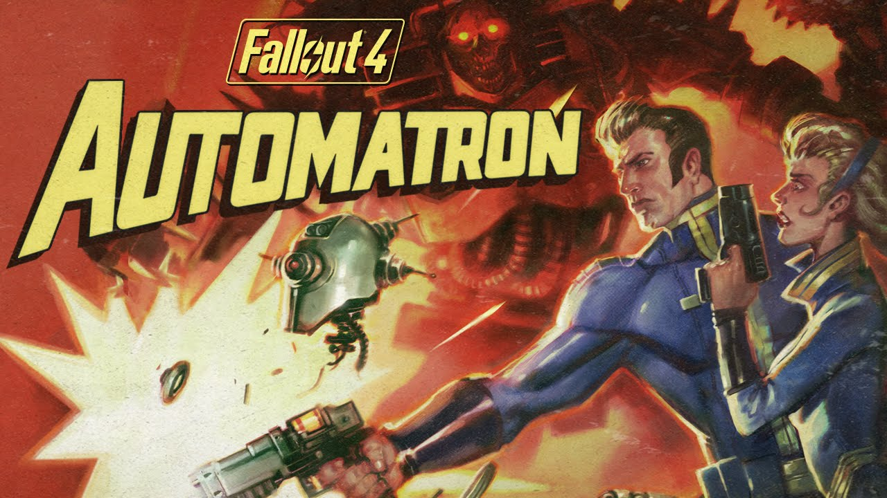
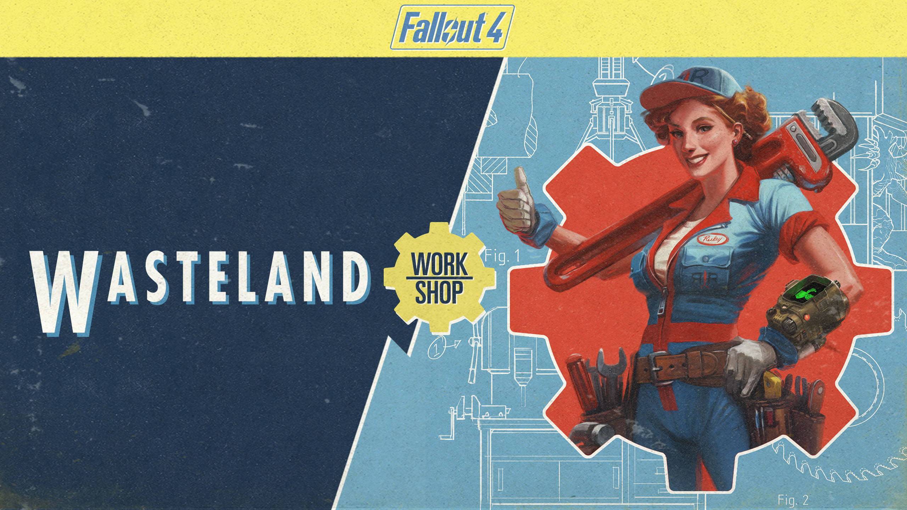
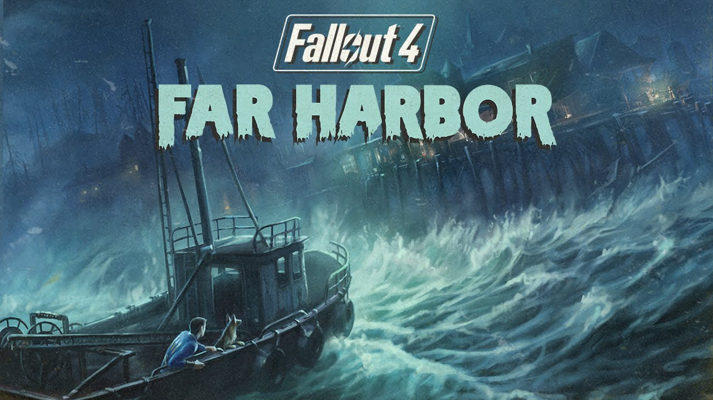
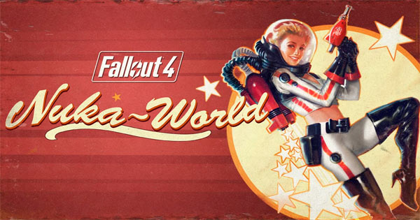
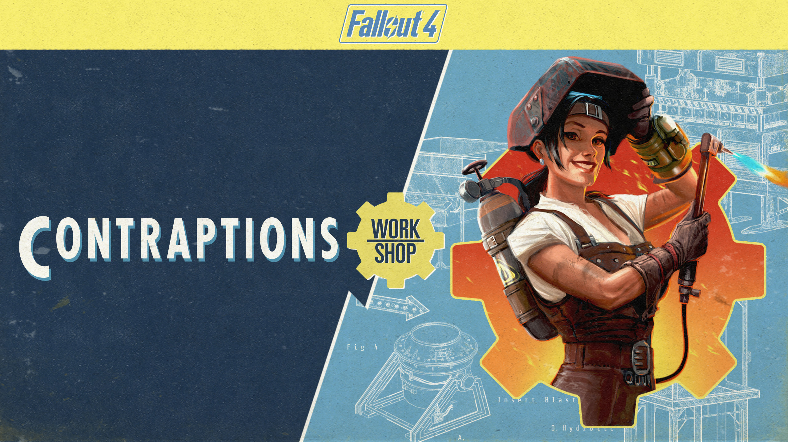
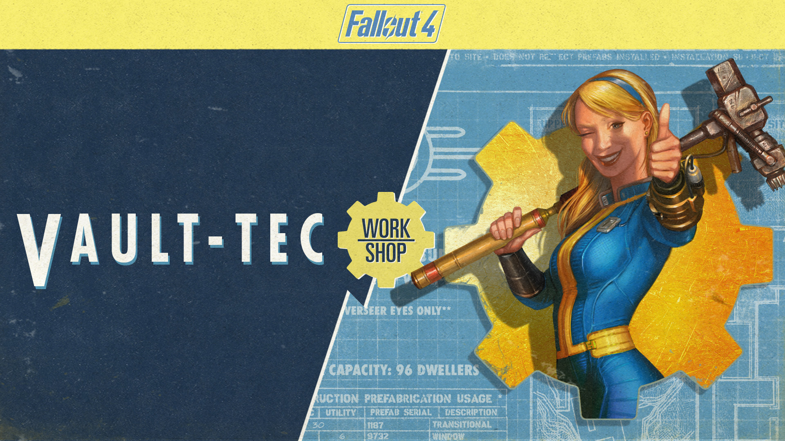

DLC's
Desde su lanzamiento en 2015, Fallout 4 ha sido una experiencia expansiva y emocionante para los jugadores, con una serie de paquetes de contenido descargable (DLC) que añaden aún más profundidad y variedad al juego base. Estos DLCs ofrecen nuevas ubicaciones, misiones, armas y mucho más, expandiendo el universo de Fallout 4 de maneras emocionantes. En este artículo exploramos los DLCs que ha proporcionado Bethesda desde el lanzamiento del juego.
"Automatron" marca el inicio de los complementos para Fallout 4 y fue lanzado el 22 de marzo de 2016. Para empezar a jugar, el personaje del jugador debe tener un nivel mínimo de 15.
El DLC Automatron presenta una nueva amenaza en el mundo: los Mecanistas. Estos enemigos despiadados lideran un ejército de robots modificados que aterrorizan el paisaje post-apocalíptico. Los jugadores son convocados para enfrentarse a esta nueva amenaza y detener la oleada de terror mecánico que amenaza con destruir los asentamientos humanos restantes. Los jugadores se embarcan en una serie de misiones emocionantes mientras siguen el rastro de los Mecanistas y sus creaciones. Desde investigar escenas de crímenes hasta perseguir señales de radio, cada misión lleva a los jugadores más cerca de descubrir la verdad detrás de la amenaza robótica y poner fin a ella de una vez por todas.
Una de las características más destacadas de Automatron es la capacidad de los jugadores para crear y personalizar sus propios robots compañeros. Desde los más básicos hasta las máquinas de guerra más avanzadas, los jugadores pueden desbloquear una variedad de piezas y accesorios para construir robots a su gusto. Además de los robots, Automatron introduce una variedad de nuevas armas, armaduras y modificaciones que los jugadores pueden utilizar tanto para ellos mismos como para sus creaciones robóticas.
Lanzado el 12 de abril de 2016 para Fallout 4, permite a los jugadores llevar su experiencia de construcción al siguiente nivel. Una de las adiciones más emocionantes de Wasteland Workshop es la capacidad de los jugadores para construir y personalizar arenas de combate. Utilizando una variedad de trampas, jaulas y obstáculos, los jugadores pueden crear arenas únicas para organizar peleas entre diferentes criaturas del mundo, incluidos mutantes, criaturas salvajes y más.
Con la incorporación de jaulas de captura, los jugadores pueden atrapar una variedad de criaturas del mundo y llevarlas a sus asentamientos para su uso. Desde mutantes hasta ghouls, los jugadores pueden capturar y domesticar criaturas para defender sus asentamientos, realizar espectáculos en arenas de combate o simplemente agregar un toque de peligro al paisaje.
Lanzada el 19 de mayo de 2016, esta expansión lleva a los jugadores a una emocionante aventura en una isla misteriosa y peligrosa conocida como Far Harbor, la cual presenta una nueva y vasta extensión de tierra salvaje cubierta de niebla y plagada de peligros. Los jugadores tendrán que navegar por pantanos tenebrosos, bosques espesos y cuevas oscuras mientras descubren los secretos ocultos de la isla y sus habitantes.
La expansión introduce una variedad de personajes nuevos y fascinantes, cada uno con su propia historia y motivaciones. Los jugadores se encontrarán con facciones enfrentadas, como los nativos de la isla, los sintéticos de la Acadia y la milicia del puerto de Far Harbor, y tendrán que tomar decisiones difíciles que afectarán el destino de la isla y de sus habitantes. La isla de Far Harbor está habitada por una variedad de nuevas criaturas y enemigos, incluidos los temibles Anglerfish, Fog Crawlers y Gulpers.
Lanzada el 30 de agosto de 2016, esta expansión presenta un nuevo y vasto mundo para que los jugadores exploren: el parque de atracciones Nuka-World, una tierra de fantasía post-apocalíptica llena de atracciones, zonas temáticas y peligros ocultos. La expansión introduce tres nuevas facciones que compiten por el control de Nuka-World: los Saqueadores, los Discípulos y los Operadores. Los jugadores tendrán que aliarse con una de estas facciones y ayudarla a tomar el control del parque, reclutando seguidores y enfrentándose a enemigos poderosos en el camino.
El parque de atracciones Nuka-World está habitado por una variedad de nuevas criaturas y enemigos, incluidos los letales saqueadores, las feroces bestias mutantes y las misteriosas criaturas de la noche. Los jugadores tendrán que enfrentarse a estos peligros mientras exploran el parque y luchan por el control de sus territorios. Nuka-World ofrece a los jugadores una experiencia emocionante y expansiva que amplía el mundo de Fallout 4 y lleva la serie a nuevas alturas.
Lanzado el 21 de junio de 2016, este DLC está diseñado para los jugadores que disfrutan de la construcción y la automatización en el juego, agregando una variedad de nuevas herramientas y características para personalizar y mejorar sus refugios. Contraptions Workshop introduce una variedad de nuevas máquinas y dispositivos que permiten a los jugadores automatizar tareas como la fabricación de objetos, la clasificación de materiales y la producción de alimentos.
Entre las nuevas incorporaciones se encuentran las cintas transportadoras, que pueden transportar objetos de un lugar a otro dentro del refugio; las impresoras 3D, que permiten a los jugadores fabricar una variedad de objetos utilizando materiales disponibles; y los clasificadores de materiales, que separan automáticamente los materiales en categorías específicas para facilitar su almacenamiento y uso. Una de las características más emocionantes de Contraptions Workshop es la capacidad de experimentar y probar nuevas ideas de construcción y automatización. Con una amplia gama de herramientas y opciones disponibles, los jugadores tienen la libertad de crear diseños complejos y ver cómo funcionan en el mundo del juego.
Este DLC, lanzado el 26 de julio de 2016, lleva a los jugadores a las entrañas de los legendarios refugios de Vault-Tec, ofreciendo la oportunidad de diseñar y construir su propio refugio de Vault-Tec, desde cero. Además de construir el refugio en sí, los jugadores también pueden experimentar con la vida en el interior. Vault-Tec Workshop permite a los jugadores crear y gestionar una variedad de áreas dentro del refugio, incluidas salas de estar, dormitorios, áreas de recreación y más.
Una de las características más interesantes de Vault-Tec Workshop es la capacidad de realizar experimentos sociales en el refugio. Los jugadores pueden asignar roles y tareas a los habitantes del refugio, observar su comportamiento y tomar decisiones que afecten el destino y la moral del refugio. Por supuesto, mantener un refugio seguro y protegido es crucial, especialmente en el peligroso mundo de Fallout 4. Vault-Tec Workshop permite a los jugadores construir defensas, reclutar guardias y establecer medidas de seguridad para proteger su refugio de amenazas externas.